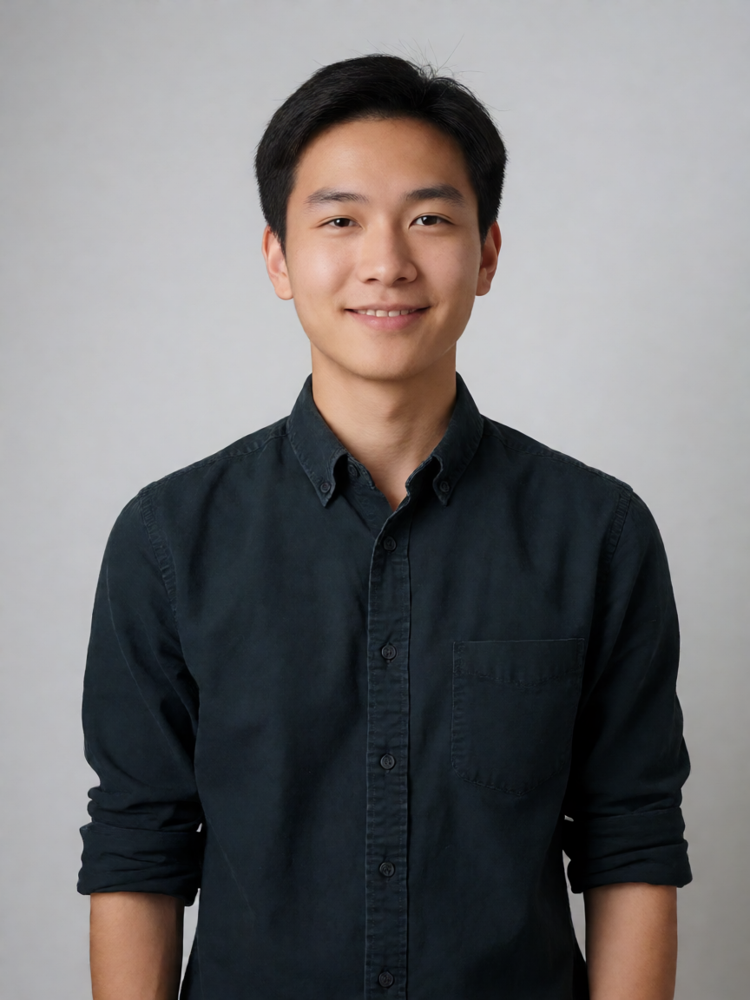
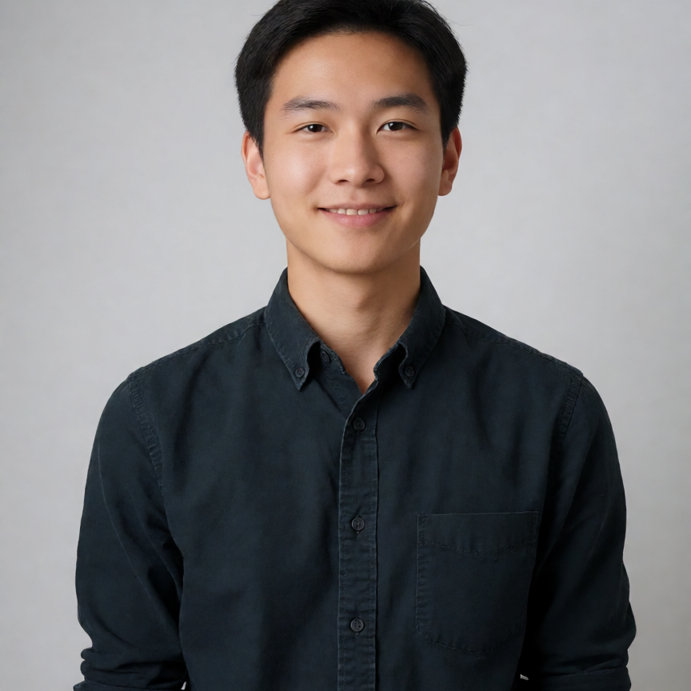

zhuzhu
项目负责人
同一张 3:4 竖版半身照，分别用「修复前」与「修复后」的样式渲染。
「修复后」直接使用线上样式表 update-server/src/main/resources/static/css/site.css；
「修复前」规则仅在本页内复刻，用于并排对比。
列宽 220px，与官网团队网格单列等宽。

项目负责人
项目负责人
同一套样式面对不同比例的原始照片：3:4 半身照、1:1 方形照、16:9 横幅照，以及未上传头像的首字母占位。
3:4 原图

1:1 原图
16:9 原图
首字母占位
object-fit: cover 居中取景，竖幅半身照先被纵向裁掉约 1/4，再被圆形切掉四角，最终只剩头部。aspect-ratio: 4 / 5），与半身照的常见比例一致。object-position: center 15% 上移，优先保住头部与肩部，避免顶部被切。